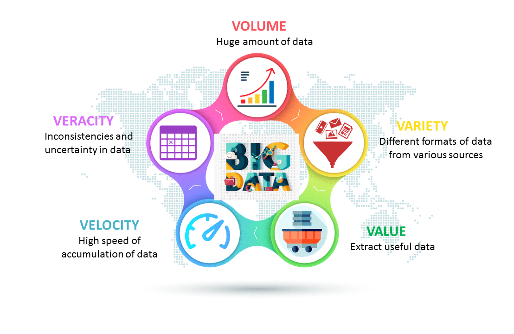
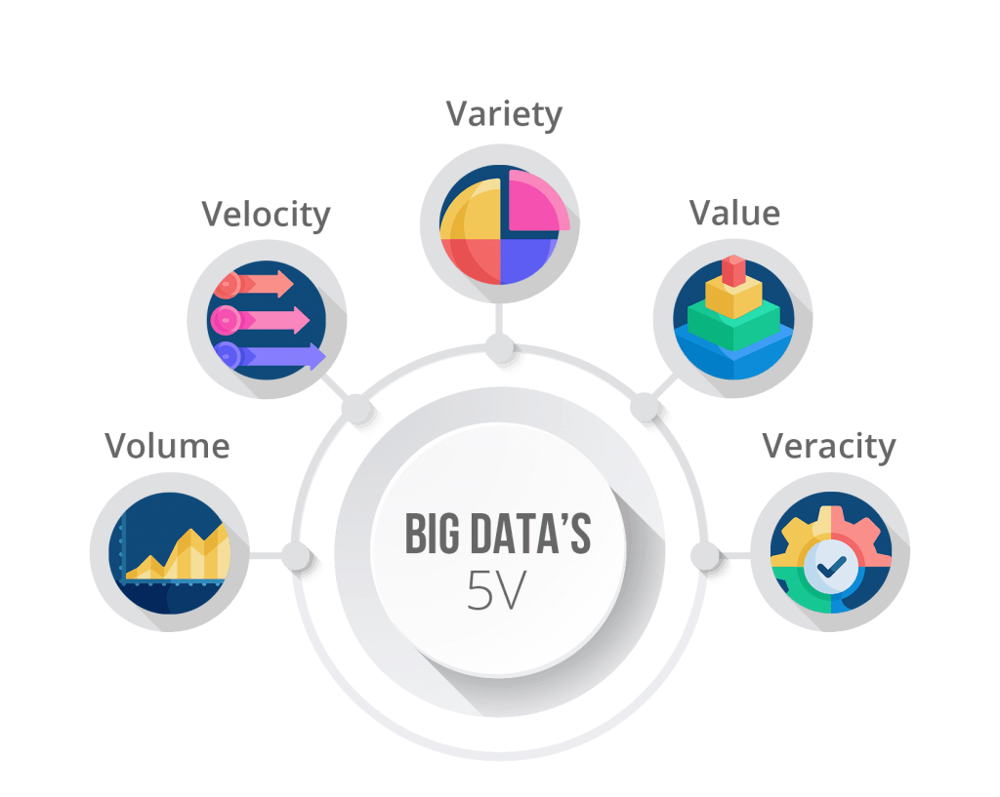
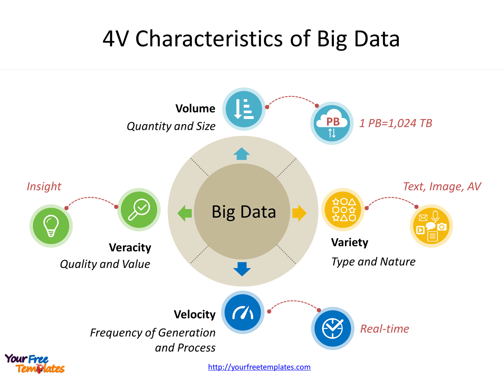
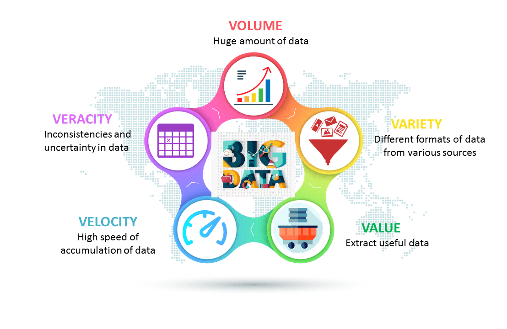
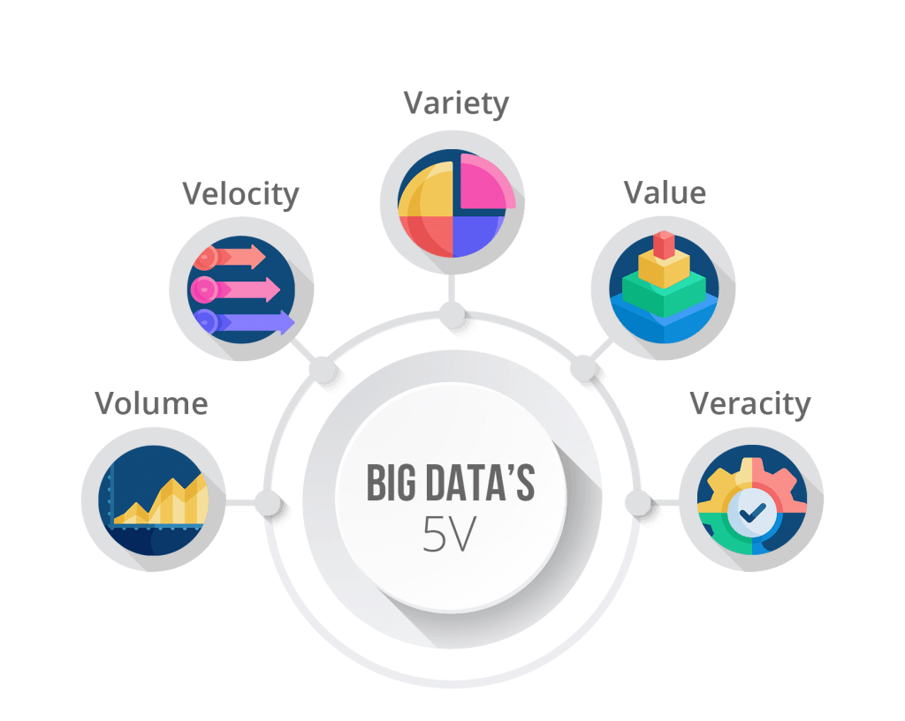
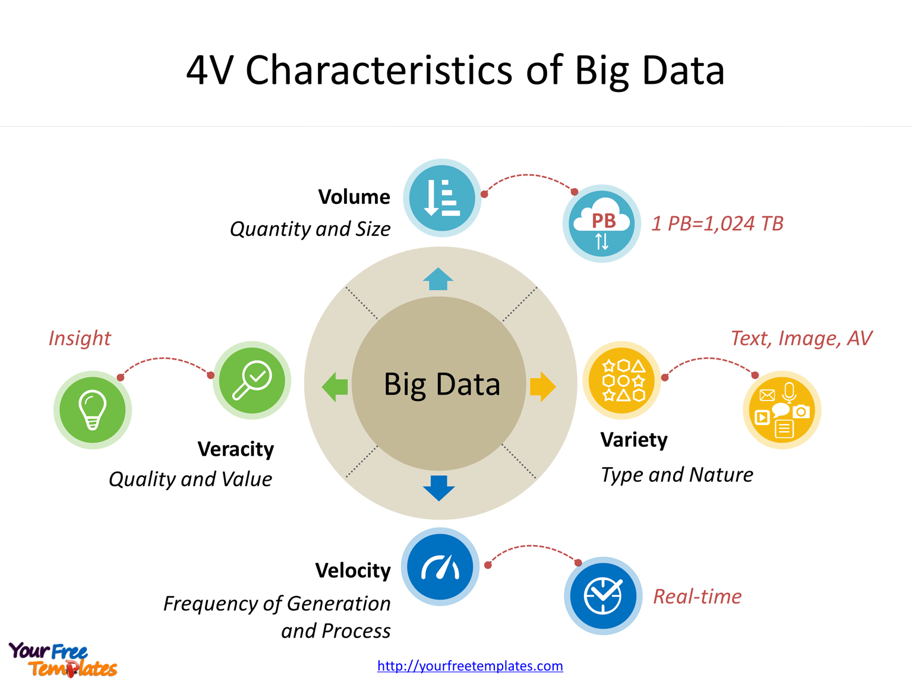

Big data can be described by the following characteristics:
The quantity of generated and stored data. The size of the data determines the value and potential insight, and whether it can be considered big data or not. The size of big data is usually larger than terabytes and petabytes.
The type and nature of the data. The earlier technologies like RDBMSs were capable to handle structured data efficiently and effectively. However, the change in type and nature from structured to semi-structured or unstructured challenged the existing tools and technologies. The big data technologies evolved with the prime intention to capture, store, and process the semi-structured and unstructured (variety) data generated with high speed (velocity), and huge in size (volume). Later, these tools and technologies were explored and used for handling structured data also but preferable for storage. Eventually, the processing of structured data was still kept as optional, either using big data or traditional RDBMSs. This helps in analyzing data towards effective usage of the hidden insights exposed from the data collected via social media, log files, sensors, etc. Big data draws from text, images, audio, video; plus it completes missing pieces through data fusion.
The speed at which the data is generated and processed to meet the demands and challenges that lie in the path of growth and development. Big data is often available in real-time. Compared to small data, big data is produced more continually. Two kinds of velocity related to big data are the frequency of generation and the frequency of handling, recording, and publishing.
The worth in information that can be achieved by the processing and analysis of large datasets. Value also can be measured by an assessment of the other qualities of big data.[32] Value may also represent the profitability of information that is retrieved from the analysis of big data.
The characteristic of the changing formats, structure, or sources of big data. Big data can include structured, unstructured, or combinations of structured and unstructured data. Big data analysis may integrate raw data from multiple sources. The processing of raw data may also involve transformations of unstructured data to structured data.
Other possible characteristics of big data are:
Whether the entire system (i.e., {\textstyle n}{\textstyle n}=all) is captured or recorded or not. Big data may or may not include all the available data from sources.
Respectively, the proportion of specific data of each element per element collected and if the element and its characteristics are properly indexed or identified.
If the data collected contains common fields that would enable a conjoining, or meta-analysis, of different data sets.
If new fields in each element of the data collected can be added or changed easily.
If the size of the big data storage system can expand rapidly.
 




